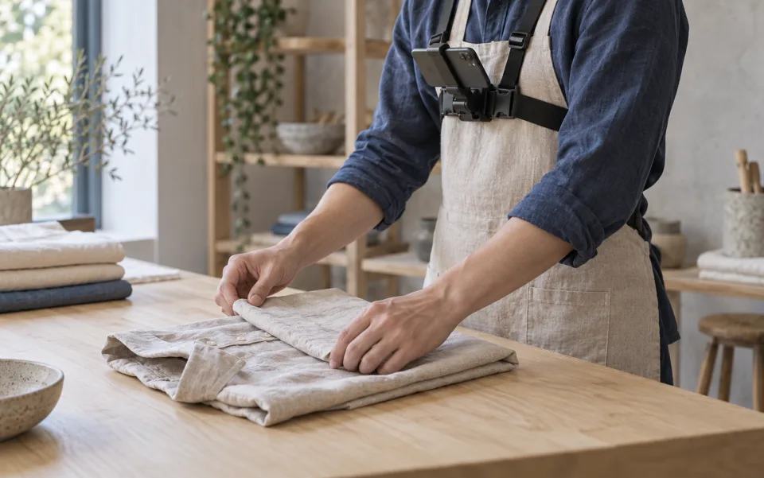

DVIDIA RESEARCH BUILT IN THE OPEN
Human skills.
Open questions.
Help turn human demonstrations into evidence we can test, share and build on. One useful question at a time.
You do not need a complete answer to contribute.

A DEMONSTRATION IS THE BEGINNINGThe research library
Find your next question.
Four starting points. Sources, open questions and a clear next step in every topic.
Opening the research notebook…
Stages describe the work in progress. Milestone counts are checklists, not measures of research success. Topic artwork is AI-generated editorial illustration.
Small work is welcome
Bring something others can check.
A careful correction, a missing source or a reproduction that did not work can all move a question forward.
-
1
Pick a question
Read the topic notes and existing issue. Say what you plan to investigate so people can work together.
-
2
Make one useful change
Add a source, sharpen a definition or run a bounded comparison. Record what you tried, including what failed.
-
3
Share the evidence
Open a pull request in the topic folder. Include citations, reproducible steps and the limits of your conclusion.